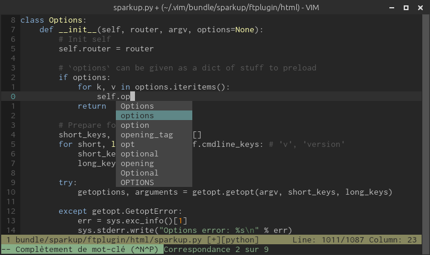
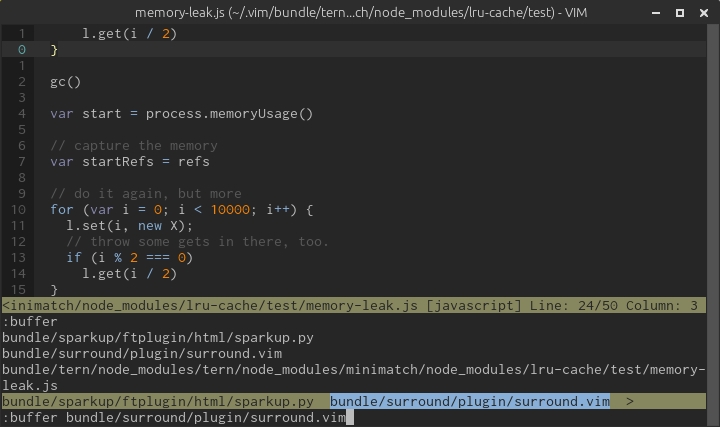
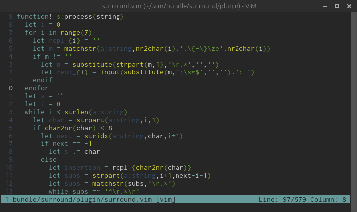

Apprentice is a low-contrast colorscheme for Vim based on the awesome Sorcerer by Jeet Sukumaran.
It’s essentially a streamlined version of the original with a reduced number of colors entirely taken from the default xterm palette to ensure a similar look in 256 colors-ready terminal emulators and GUI Vim.
Python:

JavaScript:

Vim:

Apprentice is designed first and foremost to look “good” in terminal emulators supporting 256 colors and GUI Vim (GVim/MacVim). It supports lesser terminal emulators in the sense that it doesn’t break but it will definitely look “better” in more powerful environments.
There’s nothing to do for GVim/MacVim as GUI Vim supports millions of colors by default.
Most terminal emulators in use nowadays can display 256 colors but most of them use a default TERM that tells Vim otherwise. Assuming your terminal emulator actually supports 256 colors, you must instruct it to brag about its terminal-hood
by setting the correct TERM environment variable.
Here are a bunch of common terminal emulators and their “ideal” TERM:
| Environment | Terminal emulator | Default TERM |
”Ideal” TERM |
|---|---|---|---|
| Mac OS X | iTerm2.app | xterm |
xterm-256color |
| Mac OS X | Terminal.app | xterm |
xterm-256color |
| X11 | xterm | xterm |
xterm-256color |
| X11 | URxvt | rxvt-unicode |
rxvt-unicode-256color |
| X11/Gnome | Gnome terminal | xterm |
xterm-256color |
| X11/Gnome | Terminator | xterm |
xterm-256color |
| X11/KDE | Konsole | xterm |
xterm-256color |
Please refer to your terminal emulator’s manual for how to set it up properly.
NB: I’ve started a wiki page listing the procedures for the terminal emlators above.
For best results, it’s recommended to adjust your background color to the one used in Apprentice:
235
#262626
Screen and tmux don't respect your terminal emulator’s settings and set your TERM to their default value, screen. For better color support, the recommended TERM for both multiplexers is screen-256color.
Put this line in ~/.tmux.conf:
set -g default-terminal "screen-256color"Put this line in ~/.screenrc:
term "screen-256color"A colorscheme must be placed in a directory named colors that’s somewhere in Vim’s runtimepath:
~/.vim/colors/apprentice.vim
~/.vim/bundle/apprentice/colors/apprentice.vim
…How it ends up there is for you to decide.
To test Apprentice, just type this command from normal mode and hit Enter:
:colorscheme apprenticeIf you like what you see and want to make Apprentice your default colorscheme, add this line to your ~/.vimrc:
colorscheme apprenticeIf light colorschemes are more your thing, Disciple is the negative version of Apprentice.